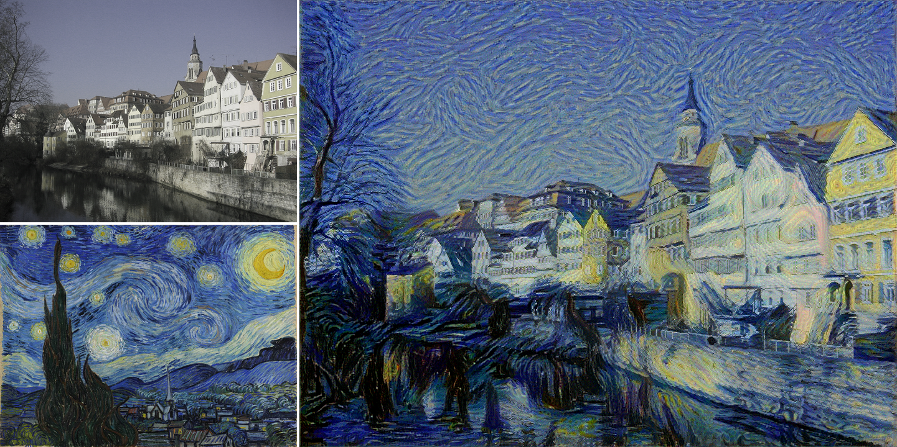

Welcome to Neural Style Transfer Online automation
Introduction to my project
Program about neural style transfer
This program is able to combine 2 different images into a single piece of artwork, with a condition for a content and style image needed for input for image processing blending altogether.

Figure 1: Example picture of the structure between content and style and stylized content images/results
Global Context Connections
Global context connection is about the expressions by our personality and personal things and by our own cultural respects.
Because of the representative images from the stylized content image, which will combine something and another thing related to the expressions image.
Product
Advantage and Disadvantage of High Quality process and fast process implementations
Fast process:
Advantage is that the fast processing from the name itself, it's much faster to process the AI
Disadvantage is that the final result/stylized content image is not better or the same as the high-quality process
High quality process:
Advantage is that the result of the image/stylized content image will have better quality result
Disadvantage is that the users need to take more time to wait for the proess is finished
The inputs are above and there are 2 boxes,
First is the input images for the content image. The stylized content image will have based picture from the
content image
Second is the input images for the style image. The stylized content image will have theme or aesthethics based
picture from the style image
Credits
Sources and Important topics about the AI and website
Tensorflow integrated with Keras for developing the AI model
Tensorflow.js for implementation of tensorflow python code into javascript web file
Google Colaboratory used for testing and writing the code for AI model
Visual Studio Code // Sublime Text 3, editor for writing the website
Github Pages used for hosting the website for free